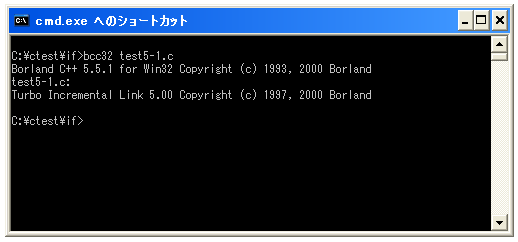
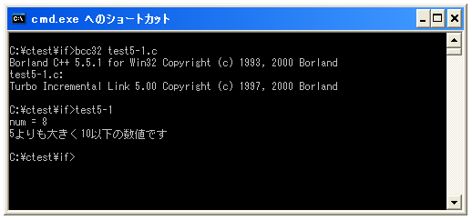

複数の条件分岐(if .. else if .. else)
「if」文では単独の条件分岐だけではなく複数の条件分岐を使って処理を分けることが出来ます。これには「if .. else if .. else」文を使用します。書式は次の通りです。
if (条件式1) {
条件式1が真の時に実行する処理;
...;
}else if(条件式2) {
条件式1が偽で条件式2が真の時に実行する処理;
...;
}else if(条件式3) {
条件式1及び条件式2が偽で条件式3が真の時に実行する処理;
...;
}else{
全ての条件式が偽の時に実行する処理;
...;
}
最初の条件式は今までの「if」文と同じです。条件式が真の場合には次に記述されたブロック内の処理を行います(そしてif文を抜けます)。そして条件式が偽の場合だけ次の「else if」へ進み、記述された条件式を評価します。評価した結果が真であればその次に記述されたブロック内の処理を行い(if文を抜けます)、偽であった場合は次の「else if」へ進みます。
「else if」は必要な数だけ記述することが出来ます。また全ての条件式が偽だった場合に実行する処理として「else」の次のブロック内に処理を記述できます。「else」の部分は必要無ければ記述しなくても構いません。
※「if」文を抜けるというのは、どこかの条件式が真と評価された場合はそれ以降の条件式を評価せずに「if」文の次へ進むということです。
実際のプログラム例としては次のようになります。
int x = 15;
if (x > 10) {
printf("10よりも大きい数値です¥n");
}else if (x > 5) {
printf("5よりも大きい数値です¥n");
}else{
printf("5以下の数値です¥n");
}
注意する点としては「else if」の条件式はそれよりも前に評価された全ての条件式が偽だった場合のみ評価されるということです。上記のサンプルのような場合ですと、それぞれの条件式だけを見ればどちらの条件式も真となりますが、2番目の条件式は1番目の条件式が偽だった場合のみ評価されます。
サンプルプログラム
では簡単なサンプルプログラムを作成して試してみます。
#include <stdio.h>
int main(void){
int num;
num = 8;
printf("num = %d¥n",num);
if (num > 10) {
printf("10よりも大きい数値です¥n");
}else if (num > 5) {
printf("5よりも大きく10以下の数値です¥n");
}else{
printf("5以下の数値です¥n");
}
return 0;
}
上記を「test5-1.c」の名前で保存します。まずコンパイルを行います。

コンパイルが終わりましたら「test5-1」と入力して実行します。

( Written by Tatsuo Ikura )

著者 / TATSUO IKURA
初心者～中級者の方を対象としたプログラミング方法や開発環境の構築の解説を行うサイトの運営を行っています。